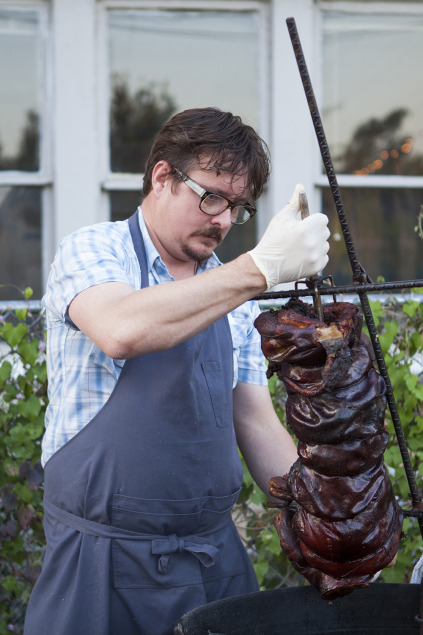

Put almonds in a food processor and pulse until finely ground. Reserve. Blend tomatoes, peppers, vinegar, garlic, cayenne, paprika, and salt in food processor. With the processor running, slowly add olive oil and then the reserved almonds, blending until smooth.
Preheat grill. Rub green onions with olive oil and sprinkle with salt. Grill until white of the onion has softened a bit and the stems have a bit of char. Cool and slice into 1/4- to 1/2-inch pieces. Cut sweet potatoes into 1/2-inch cubes. Place in a large pot of salted water and simmer until tender (do not boil). Drain and allow to cool. In a large bowl, toss green onions, sweet potatoes, red peppers, bacon, almonds, and parsley. Add the Romesco Sauce and mix thoroughly.
"Yakitori is the exact opposite of barbeque: you cook it quick not slow"
In a saucepan, bring ingredients to a boil. Immediately reduce heat and simmer until sauce is consistency of a light syrup, about 2 hours. Strain.
Preheat grill. Cut chicken into pieces about 1 1/2 inches by 1 1/2 inches. (Sakurai also likes to use the liver, gizzard, and heart.) Thread on skewers and grill, turning, just until surface of meat lightens, about 2 1/2 minutes. Brush chicken with Yakitori Sauce on all sides and cook until done, another 2 1/2 to 3 minutes, applying sauce a couple more times. Do not let flames touch chicken. Meat is done when firm to the touch but not hard.
Give each guest a skewer of chicken. Place condiments in small bowls or divide among plates.
Preheat grill (can use a toaster or panini press). Brush bread with olive oil and grill until a deep golden-brown on both sides. Grate tomatoes using the large holes on a box grater and put juice and pulp in a nonreactive bowl or pan. Stir in garlic, 2 tablespoons olive oil, and salt. Briefly soak bread until it is thoroughly moist but not soggy. Meanwhile, in a separate bowl, toss sliced zucchini, fennel, herbs, and onion with olive oil and salt. Set aside. Spread bread generously with stracciatella and arrange zucchini mixture attractively on top. Serve on a platter garnished with reserved herbs.